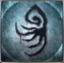
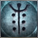

Caryll Runes in Bloodborne are upgrades the player can make to his/her character that give different bonuses (similar to rings in the Souls games). They are languages of the Great Ones inscribed by Runesmith Caryll, a student of Byrgenwerth. Hunters who etch the runes into their mind can attain their wondrous strength.
- Runes are memorized at the Memory Altar in the Hunter's Dream, which unlocks after obtaining the Rune Workshop Tool.
- There are four rune slots. Three are designed to accept generic runes while the fourth slot serves a covenant rune.
- Runes stack with other runes of the same type (like Moon 1 + Moon 2 + Moon 3 = 110% x 120% x 130% (total 171.6%) Blood Echoes
- A single rune cannot stack with itself (like Moon 1 + Moon 1 + Moon 1 = impossible)
- You can only possess one rune of the same type and strength unless it is dropped by NPCs on death like William and can be glitched to received more than one Eye 2 runes. A Madman's Knowledge will replace it if you acquire it again.
Caryll Runes
| Name & Icon | Effect | Location |
|---|---|---|
 Anti-Clockwise Metamorphosis |
Boosts Max Stamina +10% | Forbidden Woods on a corpse near the blue aliens. |
| Boosts Max Stamina +15% | Talk to Patches the Spider in Lecture Halls by using the ladder from the second floor. Either option will produce the Rune. | |
| Boosts Max Stamina +20% | Lower Ailing Loran Root Chalice | |
Arcane Lake |
Arcane DMG Reduction +5% | Yahar'gul, Unseen Village - On a corpse near the skeleton slugs. |
| Arcane DMG Reduction +7% | Byrgenwerth - right at beginning, to left of lamp, near the tree with the brainsucker. | |
| Arcane DMG Reduction +10% | Isz Root Chalice | |
 Beast |
Temp. boost to transform +20 | At the very bottom of the Healing Church Workshop Tower, dropped by the Beast-possessed Soul. |
| Temp. boost to transform +50 | Kill the Suspicious Beggar you meet in the Forbidden Woods, at the back of the building with 2 shortcut elevators. Sending the bandaged npc to Iosefka will turn him into an alien that hangs out in the rear of Iosefka's clinic that also drops the rune. | |
| Temp. boost to transform +100 | Lower Ailing Loran Root Chalice | |
Beast's Embrace |
Covenant Rune: Transforms character into a ghastly Beast type of creature |
Defeat Laurence, The First Vicar |
Blood Rapture |
V.ATKs restore HP +200 | Dropped by the Shadow of Yharnam. |
| V.ATKs restore HP +250 | Cursed and Defiled Root Chalice | |
| V.ATKs restore HP +300 | Dropped by the Bloody Crow of Cainhurst fought at the completion of Eileen the Crow's Quest. | |
Clawmark |
Ups visceral attack ATK +10% | Drops from a hunter in the Hypogean Gaol Lamp room in Yahar'gul, Unseen Village, after killing Rom and entering the nightmare version. |
| Ups visceral attack ATK +20% | Dropped by the transformed Gilbert at Central Yharnam at the lamp after killing Rom and entering the nightmare version. | |
| Ups visceral attack ATK +30% | Lower Ailing Loran Root Chalice | |
 Clear Deep Sea |
Add slow poison RES +100 | Forbidden Woods behind a big gravestone. |
| Add slow poison RES +200 | Nightmare Frontier behind a rock thrower on top of a hill. | |
| Add slow poison RES +300 | Lower Ailing Loran Root Chalice | |
 Clockwise Metamorphosis |
Boosts Max HP +5% | Forbidden Woods, behind locked gate up the stairs from the boss. |
| Boosts Max HP +10% | Nightmare Frontier, in a cave across the stone bridge. | |
| Boosts Max HP +15% | Pthumeru Ihyll Root Chalice | |
 Communion |
Max vials held UP +1 | Found above the Cathedral Ward Lamp, through the door that opens after defeating the Blood-Starved Beast. Take the elevator up and it's in a chest in the first room. |
| Max vials held UP +2 | Lecture Building. | |
| Max vials held UP +3 | Iosefka's Clinic. | |
| Max vials held UP +4 | Dropped by the Celestial Emmisary. | |
| Max vials held UP +5 | Pthumeru Ihyll Root Chalice | |
Corruption |
Covenant Rune: Cont. heal near death +1 |
Join the Cainhurst Vilebloods. |
Deep Sea |
Add frenzy RES +100 | Lower Hintertomb Root Chalice |
| Add frenzy RES +200 | Forbidden Woods - by 2 Viper Pits. | |
| Add frenzy RES +300 | Isz Root Chalice | |
 Dissipating Lake |
Bolt DMG Reduction +5% | Forbidden Woods under some huge entangled roots near a pig. |
| Bolt DMG Reduction +7% | Ailing Loran Root Chalice | |
| Bolt DMG Reduction +10% | Lower Ailing Loran Root Chalice | |
Eye |
More items from fallen enemies (Item Discovery +50) | Obtained in Nightmare of Mensis, on a corpse next to the Mergo's Loft: Base Lamp. |
| More items from fallen enemies (Item Discovery +70) | Drop from Master Willem. | |
| More items from fallen enemies (Item Discovery +100) | Isz Root Chalice | |
Fading Lake |
Fire DMG Reduction +5% | Nightmare Frontier. |
| Fire DMG Reduction +7% | Ailing Loran Root Chalice | |
| Fire DMG Reduction +10% | Lower Ailing Loran Root Chalice | |
 Formless Oedon |
Max QS bullets held UP +1 | Send Gascoigne's daughter to Iosefka's Clinic |
| Max QS bullets held UP +2 | Lower Pthumeru Root Chalice | |
| Max QS bullets held UP +3 | Dropped by the Oedon Chapel Dweller in Cathedral Ward. | |
| Max QS bullets held UP +4 | A secret passage taking elevator leading to Healing Church Workshop in Cathedral Ward. Take the elevator up, turn around and roll to open rooftop. It's in a chest. | |
| Max QS bullets held UP +5 | Pthumeru Ihyll Root Chalice | |
Great Deep Sea |
Add all types of RES +50 | Lower Hintertomb Root Chalice |
| Add all types of RES +100 | Nightmare Frontier - There is a small cave with a hole by the Brain Trust on the cliff, drop down (another Brain Trust right after the drop) in to the poison swamp and take a right. It's in one of the narrow passages guarded by few squids. | |
| Add all types of RES +150 | Isz Root Chalice | |
Great Lake |
All DMG reduction +3% | Lower Hintertomb Root Chalice |
| All DMG reduction +4% | Upper Cathedral Ward, take a right turn at the top of the stairs above the Lamp. | |
| All DMG reduction +5% | Isz Root Chalice | |
| |
Rally Potential +10% | Kill the Carrion Crow on the top floors of the Research Hall |
| Rally Potential +20% | Defeat Ludwig, The Holy Blade | |
| Rally Potential +30% | Would have been located in depth 5 of an unknown Root Chalice. No drop tables exist for this rune and can only be obtained via save editing | |
 Heir |
More Blood Echoes gained from V.ATKs (+20%) | Dropped from Henryk in Tomb of Oedon area. To fight him, follow Eileen the Crow's quest line. |
| More Blood Echoes gained from V.ATKs (+40%) | Obtained from a corpse in Yahar'gul, Unseen Village. Found in a room with bell ringer that summons a werewolf and a wheelchair enemy, near a brick troll. | |
| More Blood Echoes gained from V.ATKs (+60%) | Pthumeru Ihyll Root Chalice | |
Hunter |
Covenant Rune: Increases stamina recovery speed |
Complete Eileen the Crow's questline and she rewards you with this rune along with the Crow Hunter Badge. |
Impurity |
Covenant Rune: Increases max health by 2% while in co-op |
Join The League via Valtr. |
Lake |
Physical DMG reduction +3% | Obtained from a corpse at Hemwick Charnel Lane. See Lake rune description for the exact location. |
| Physical DMG reduction +5% | Cursed and Defiled Root Chalice | |
| Physical DMG reduction +7% | Pthumeru Ihyll Root Chalice | |
 Milkweed |
Covenant Rune: - Slight increase to Item Discovery - Transforms character into a celestial Kin type of creature |
Complete the questline for Saint Adeline. |
 Moon |
More echoes from slain enemies (+10%) | Obtained just downstairs of the Hypogean Gaol lamp post. Guarded by two Snatchers. |
| More echoes from slain enemies (+20%) | Obtained at the very bottom of the spiral staircase during the Micolash boss fight in Nightmare of Mensis. | |
| More echoes from slain enemies (+30%) | Obtained in Nightmare of Mensis. Stand in front of Brain of Mensis' eye (giant brain) in Mergo's Loft's "abyss" and use the "Make Contact" gesture (wait for your hunter to switch sides). | |
 Oedon Writhe |
V.ATKs grant QS bullets +1 | Obtained by killing Adella in Hypogean Gaol, Oedon Chapel or Iosefka's Clinic. |
| V.ATKs grant QS bullets +2 | Found after killing Iosefka in Iosefka's Clinic. This must be done before killing Rom, the Vacuous Spider as she will no longer drop this rune after she is killed. | |
| V.ATKs grant QS bullets +3 | Pthumeru Ihyll Root Chalice | |
Radiance |
Covenant Rune: Increases HP recovery from Blood Vials. |
Received from completing Alfred's questline. You must return to the first place you met him at the altar and you will find his corpse there with the rune. Does not drop if Alfred is killed before he murders Annalise. |
Stunning Deep Sea |
Add rapid poison RES +100 | Lower Hintertomb Root Chalice. |
| Add rapid poison RES +200 | Nightmare Frontier. | |
| Add rapid poison RES +300 | Lower Ailing Loran Root Chalice |

 Anonymous
Anonymous
- Anonymous
My Runesetup is always Clockwise, Anticlockwise and Great Lake. I like to have some defensive boosts with me. Covenant Rune is Corruption because of free Insight after a Hunter kill.
- Anonymous
will elden ring's covenants act the same way bloodborne's do? i'd hate to have yet again all my characters in the same covenant just for the sake of faster stamina recovery
- Anonymous
"On a theoretical physicist level, your character memorizes swift lines and fridge drawings created by gods for passive bonuses that works regardless of weaponry.
My favorites are more money, more money, and MORE MONEY- they stack."
When it comes to covenants
Either 10% stamina regeneration or free insight for a hunter kill
- Anonymous
Runes I used
formless Oedon, Communion and great lake/ guidance
- Anonymous
- Anonymous
- Anonymous
- Anonymous
- Anonymous
Did someone has the glyph for the Fading Lake + 7%?
These aren't working: 9d6vhapi - r4qs4gux - fddm4rz7 -5njfipyu
- Anonymous
- Anonymous
I would love to see this system improved upon in a possible Bloodborne sequel or successor
- Anonymous
its sucks that they gave ps+ owners have easier time to get tier 3 runes than whom do not
- Anonymous
To the guy asking about Willem rune drop, yes it drops every NG all the items respawn including runes / unique items in every NG + you will just end up with duplicates if not sold.
- Anonymous
What if i killed Willem and take the top Eye rune, will he drop it again in the next ng IF i sold or discarded the Eye rune i took before?
- Anonymous
Thanks Fromsoft for making the two PvP covenants beside HoH absolutely useless. Corruption rune - whether you have 5% HP or 12% means nothing in PvP, and also in PvE unless you're significantly overleveled in earlier game areas, but at that point nothing is even capable of getting your health so low anyway. The Radiance rune increases the HP healed by a whopping 12 points on 50 VIT. Not surprising that nobody uses them, as it's a good waste of a slot that's much better used on a nice stamina regeneration bonus or beast/kin cosplaying.
- Anonymous
i *****ing hate dungeons lol. everytime i check this page for something im lookin for it turns out to be in depth 7473743839 layer 737482828447 nalabalabalabal. Is there a way to skip these painful amounts of dungeon runs
- Anonymous
- Anonymous
Thanks for the info, really helpful when designing new builds. One slight lore note, Iosefka isn’t the one you kill in the clinic. Iosefka drops her blood vial as kin. The rune is dropped by some member of the Choir (not sure if she’s named in game).
- Anonymous
It's a shame that all the base-game Oath Runes (Corruption, Hunter, Impurity, Radiance) offer virtually non-existent benefits, especially given by what's required by the player in order to obtain them, and where they're obtained over the course of a play-through. Corruption regenerates 1 HP per second when below 12.5% max HP, virtually useless because nearly anything can kill you at that low HP. Hunter increases Stamina regeneration by 6%, which is marginal at best, given how fast Stamina regenerates already. Impurity increases a summon's max HP by 2%, again, an effectively non-existant benefit. Worst of all; Radiance increases HP restored from Blood Vials by "2%". The in-game description says "2%", but doesn't specify that it's actually a 2% multiplicative of the 40% that Blood Vials restore. So it's actually a 0.8% increase in how much HP is restored per Blood Vial. Which translates to a flat +12 HP restored per Blood Vial.
- Anonymous
I'm kinda surprised there aren't any videos on YouTube that aren't just dedicated to showing where all the runes (and each version) are. Also, hello person who is reading this that might feel like they missed everything because they're looking at an "outdated" game. Don't feel bad! We're always here in spirit!
- Anonymous
All Dungeon Chalice runes are locked away in root chalices. Are they guaranteed to spawn or are these random as well? I really don't feel like making multiple chalices to try and get these. Online play is not an option unfortunately.
- Anonymous
I fought my way through most of the dungeons (loran & isz) I didn't get any runes yet! What am I doing wrong?
- Anonymous
- Anonymous
Increase physical defense, increase all defense, increase hp, cainhurst armor, shield. "Who says you can't play as a knight in Bloodborne?"
- Anonymous
Just gonna throw this statement out there since i hardly see any...."Thank you for all the easy glyph locations guys."
- Anonymous
Best runes are: first place for Clockwise Metamorphosis and Anti-clockwise Metamorphosis in second place. Third could be Clawmark or Lake' runes family (Lake, Great Lake especially). The other are just situationals. If your temporary goal is farming, Moon and Heir are suited for it. If you fight a easy parryable boss (as Maria, Gehrman or Gascoigne), Blood Rapture and Oedon Writhe are good (in sinergy with Clawmark). If you wear clothes with high levels in beasthood, Beast is a plus. But, as I said, the Metamorphosis, the Lakes and Clawmarks are useful in each situations.
I scoured all three Bloodborne wikis as well as Reddit for glyphs and the details about those glyphs. Then I checked every single one of them to see if they were still active, some of them twice just to make sure they were really dead. This is what I came up with; the fastest paths to all the Runes and Lost / Uncanny weapons as well as all the gem farming glyphs that are still active. Enjoy! docs.google.com/spreadsheets/d/1O8N7xnoSS935oL6eqfqDngmK0bUqqYpy1Ytoc5_cwwQ
- Anonymous
Is caryll a male or female and does any one have in game evidence??
- Anonymous
- Anonymous
- Anonymous
Did anybody else receive the "Clawmark" rune from the beast the jumps out of a window in central yharnam.You know the window you talk to the guy with a flamesprayer.
- Anonymous
Is it possible that runesmith Caryll is based on Carroll from H.P LoveCraft's book "At the Mountains of Madness" I haven't finished the book yet, but this is just a theory.
- Anonymous
the moon rune description lists the Brain of Mensis as "mother brain". this should really be changed . people are looking for factual info not nicknames
- Anonymous
The moon rune is so op.. Im blood lvl 150 and only just beat the one reborn on ng +, been using one at least one variation of it since I first found it on my first playthrough wish the silver serpent ring in dark souls did this much
- Anonymous
Don't you get a rune by killing the NPC in the Cathedral Ward right next to the lamp?
- Anonymous
Yuck! the best variants are in Root Chalices, i'll just Get Good instead
- Anonymous
Would be nice if it had a rune that grants you with more blood resistence.
- Anonymous
Is there any way to expand the amount of Caryll Runes you can use? Say from using 3 of the typical ones (not counting Covenant runes mind you) to maybe being able to use 4 or 5 of them at once? Just wanted to ask. Thanks in advance for the help. Much appreciation.
- Anonymous
so when you get a rune and click "use" is the boost temporary or permanent? Like does it stay with me forever after I use it or only for a short time? Like idk the communion rune gives me a higher blood vial maximum, so does my maximum gets upgraded for the rest of the game or is it only for a limited amount of time?
- Anonymous
How does that work? Do they have upgrades in the world? Is that what happens when you equip a rune in the blue slot?
So I sent the old lady to the cathedral ward. Then i sent the beggar (who semester to be eating corpses in the forbidden woods to the cathedral ward. He kille (suposedly) the lady and when attacked (hes passive and you can speak to him) Outside the ward, he turns into a huge beast that drops beast +50 upon death
- Anonymous
If you kill the priest/pope that's right before the Spider Boss in the Burgenworth he drops a Rune called Eye which, as the text description describes, lets you "Make additional discoveries." No idea what that means but I'm using it now.
- Anonymous
Star increase discovery by 70, dropped by Npc in bygernwyth before spider boss(must kill npc)
- Anonymous
from the hunter you kill at the last part of the eileen the crow questline
- Anonymous
Someone with a better working knowledge of the wiki table format needs to re-sort these and organize the table, it looks really rough. They should at minimum be sorted according to the game's default order; i.e. Lake, Dissipating Lake, Fading Lake, Arcane Lake, Deep Sea, and so on...
found in high level chalice (first playthroug): great lake -> reduces all damage recieved by 3%.
- Anonymous
i obtained a +3 version of this rune from killing the "helper" in Oedon chapel, cathedral ward
- Anonymous
I found one in one of the large chests in a Depth three hintertomb chest.
- Anonymous
I've counted about 7 in my inventory that didn't make the list, wish there was a complete list already, if you want to know which ones your're missing I will let ya know
- Anonymous
I noticed that Odeon Writhe LVs weren't being noted here, so I added a note to differentiate between the two and how to acquire them. Does anyone know if there are any tiered runes? - PSN: NIKTENDO1
- Anonymous
Found rune that can be obtained only from chalice dungeon. Layer 1. Follow sub door between chamber of seal lamp and layer 1 lamp. Pthumeru Ihyll chalice, glyph nmvnj2eg
- Anonymous
You can get a claw mark from central yharnam. After defeating a boss (vicar amelia? ?) A small wherewolf will spawn next to the lantern and try to kill you
- Anonymous
Any info about Great Deep Sea rune? Have done NG and NG+, still don't have this OP rune. More then 25% buff to all resistances? - Yes, please.
- Anonymous
The rune that drops from Willem grants 70 item discovery and the one from the Nightmare Men's is grants 50.
- Anonymous
The Arcane Lake rune that's 7% is found in Byrgenwerth, not in Yahar'gul, Unseen Village (nightmare version). I think you have those switched.
- Anonymous
Can anyone confirm having a +2 version of this rune and where they got it? Contrary to the table above, the Chapel helper drops the +3 one, and there is no NPC in Iosefka's clinic that drops a rune of this type.
- Anonymous
- Anonymous
Just found a 5% damage in a chalice dungeon, it is not on the list!
- Anonymous
found in the cathedral ward going up the elevator half way up roll out when you see an opening to do so, there you will find yourself at the top of the ward where you will collect the odeon whrithe
- Anonymous
- Anonymous
This list doesn't contain almost any of chalice dungeons runes. So here less then half runes of the game. Every rune has top tier version with star in the middle and saturated colours, just version with saturated colours and grey version(low quality version). But some of runes can have up to 5 versions, like communion 1-5 and Formless oedon 1-5.
- Anonymous
cannot find Great Lake +3% in Hemwick Charnel Lane, only Lake can be found, so where is the Great Lake +3%
i found a rune great deep sea which add all type of res +50 in hintertomb
- Anonymous
How much does this rune increase recovered HP? I didn't notice any changes (though they could be slightest)
- Anonymous
Is there a rune that increases Arcane damage output? I don't see one on the list and wondered if anybody has seen one.
- Anonymous
since i haven't seen anything to clarify, can i equip multiple runes of the same strength (e.g. 3 strong clockwise metamorphosis runes as opposed to 1 weak 1 normal and 1 strong clockwise metaphorsis runes)
- Anonymous
I can confirm that several runes (those not found in the main game) are among the random treasure generated in root chalice dungeons, where they appear is dependent on the depth of the dungeon and their strength where; low strength rune = layer 3, medium strength = layer 4 and high strength rune = layer 5. These chalice runes also seem to appear quite often but only one per floor (generated dungeon?) and can be missed by the player just as often, remember to fully explore the dungeons and check for fake wall by hitting walls with no tree roots inside rooms. I can't currently confirm if offerings affect rune appearance. Also I can't confirm if some of the runes are in the normal chalice dungeons or are root chalice dungeon only. I can also corroborate the existence of the runes: -arcane, fire and electric damage reducing runes have a 5%, 7% and 10% level of strength each. Fount the electric and fire 7% runes in root chalise dungeons. -all damage down 3% exists and is among the layer 3 root dungeon runes. -slow poison, fast poison and frenzy have a +100, +200 and +300 iterations. found those not in the main game in chalise dungeons.
- Anonymous
This needs confirmation yet??? "Make sure to get all runes possible in your first play-through. Any rune not obtained in new game, becomes insight in new game +." The runes of the chalice not obtained disappear too????
- Anonymous
Found the great lake 5% reduced damage taken in Great ISZ root chalice (foetid, rotten and cursed). It was in the sarcofaghus after the 2nd boss, i believe layer 3
- Anonymous
the last bullet point at the top simply isn't true. i have all three moon runes equipped right now. like a boss
- Anonymous
None of the oath runes are working for me. Is it a bug? They show no effect, and even the stat page doesn't list the effects.
- Anonymous
Got Fading Lake from chalice and it's only 7%, not 10% like listed above
- Anonymous
Dunno how to add them with proper formatting. I tried to add a row but it *****ed up the headers so w/e. Can someone else do it? -Great Deep Sea (Add all types of RES +50): not sure where I found this -Formless Oedon (Max QS Bullets +2): not sure where either -Blood Rapture (V.ATKs restore HP +250): Just found this recently in a chalice dungeon
- Anonymous
Huh strange.... just found a Formless Oedon Rune which gives Max QS bullets held up+2 in the foetid version of Lower Pthumeru Root Chalice in a Layer 4 sarcophagus, find it rather strange that in a depth 3 chalice dungeon i find the weakest version of a rune. Did I overlook something or would that one not be listed yet? Perhaps there are other weaker versions of runes which aren't listed yet?
- Anonymous
+50 all RES Rune found in Fetid Lower Hintertomb. Glyph kbzmr4m4
- Anonymous
that you get those oath runes from npc quest I killed all my npc's...Well it was worth it
- Anonymous
Can someone edit and update the rune? I got it from killing Gascoigne's daughter after I sent her to Iosefka's Clinic by not giving her the Red Jeweled Brooch. You need to do the earily exploit, kill the fake Iosefka who stands on the clinic bed and get One Third of Umbilical Cord in order to make Gascoigne's daughter reaching the clinic alive.
- Anonymous
so i just killed the shadow of yharnam and the blood rapture rune isn't there, isn't in my inventory, or in the hunter's dream. am i screwed?
- Anonymous
I ran some testing to find what each rune gives, the lowest gives +30% and the middle gives +40%. I haven't found the third but I'd assume it's +50%.
- Anonymous
- Anonymous
Found a stunning deep sea rune of +300 in Lower Loran. will provide glyph later
- Anonymous
Found Beast (+100) in Sinister Lower Ailing Loran Root Chalice
- Anonymous
its by a ledge where all the old ladies are go through the gate where the executioners stalk about keep walking forward there be 4-5 dogs with one hag and by the ledge it there i just picked it up 15 min ago
- Anonymous
I'm 90% sure you get the rune from sending the little girl / Gascoigne's daughter to the clinic instead of choosing either of the other options. Confirmation from other sources would be appreciated.
- Anonymous
- Anonymous
I'm not sure which covenant rune to use. Radiance would be useful in both PvE and PvP, but Hunter seems almost necessary. Is its stamina recovery actually noticable, or is it irrelevant if I already put 40 points into END?
- Anonymous
- Anonymous
Add rapid poison RES +100 found it in sinister hinter tomb root chalice
- Anonymous
Hunter anyone? What could have been a very interesting and intricate part in the invasion/co-op system has now been reduced to ONE rune, Corruption and Radiance are seriously underpowered, and I so wanted to be a Cainhurst, but... Nothing but a disadvantage when given the choice of Hunter.
- Anonymous
This is obvious guys. Lets think. How did Caryll make runes? By making contact with the great ones. We make contact to a great one and... we get a rune. The 'Mensis Brain' is our good buddy Oeden.
- Anonymous
it was found in Lower Pthumeru Root chalice layer 2 1st bonus room. chalice glyph : ethbvmfs its a Foetid and Rotted chalice as well
- Anonymous
We've reached a point where everything has been found, but the wiki is still incomplete. I'm aware I could scrounge through the comment sections of every missing rune, but this is a wiki not a message board. - Bolt damage reduction 7% - Fire damage reduction 7% - Max bullets +1 and +2 - All resistances +50 - Rapid poison resistance +100
- Anonymous
They seriously need a blood attack defence rune to deal with all those lvl 50 blood tinge shooter spammers....
- Anonymous
the astral cloacktower in the dlc.. before using the dial, you can see the runes around the edges or whatevs. perhaps maria knew somethin. :P
- Anonymous
Got the rune once, then i went into new game plus and the crow dropped it again.
- Anonymous
These runes make me think of the gate seals in The Necronomicon.
Blood rapture
Oedeon writhe
And Heir
(i like to see the bosses BLEED)
0
+10
-1